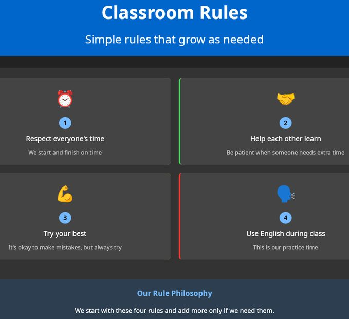

Classroom Management & Professionalism
Introduction
Management is the foundation for engagement, not a response to disruption. For me, management is not about control, but about orchestration. It is the framework of clear expectations, mutual respect, and procedural routines that creates the safe and predictable environment for students to feel secure enough to take the linguistic risks.
This section clarifies my beliefs and practices for creating safe, equitable, and learning-focused environments with multilingual learners (children and adults). Drawing on Module 5, I outline routines, relational strategies, and professional norms.
My Management Framework (3 Rs)
1) Relationships
- Learn and correctly pronounce names; greet at the door; brief check-ins.
- Know students' goals; use interest surveys; reflect back strengths publicly and privately.
2) Routines
- Explicitly teach entry, materials, transitions, partner talk, tech use, and help-seeking.
- Visual cues and multilingual signage; rehearsals with feedback; posted agenda with icons.
3) Responsive Support
- Two-step correction: prompt (private, specific) → choice/off-ramp (move seat, quick break).
- Restorative follow-up: quick reparation and reset, not lengthy punishment.
Working with Adults vs. Children: Adjustments and Applications
| Aspect |
Working with Adults |
Working with Children |
| Establishing Norms |
Collaborative Negotiation. We democratically establish a "Classroom Charter" together. Adults have ownership over their learning environment. |
Clear, Consistent Guidance. I establish simple, positive rules (e.g., "Be a good friend," "Try your best"). We model and practice routines extensively. |
| Building Rapport |
Partnering. Rapport is built on mutual respect for life experience. I position myself as a facilitator and expert guide, but not an authority figure. |
Nurturing. Rapport is built on warmth, consistency, and emotional safety. I am a caregiver and a guide. |
| Managing Engagement |
Leveraging Autonomy. I give choices in topics, projects, or activities. Breaks are self-regulated. The focus is on intrinsic motivation and goal attainment. |
Structured Pacing. I manage energy levels with varied activities (e.g., song, movement, quiet reading). Breaks are scheduled. The focus is on extrinsic rewards (praise, stickers) that build intrinsic motivation. |
| Preventing Issues |
Addressing the "Why." If an adult is disengaged, I inquire privately. The cause is often external (stress, fatigue) and can be addressed with flexibility. |
Redirection & Proximity. I use non-verbal cues and redirect off-task behavior quickly and positively. The cause is often developmental needs (attention, energy). |
| Language of Direction |
Requests & Rationale. "Could we all please focus here? This grammar point is crucial for your upcoming presentations." |
Clear, Positive Commands. "Eyes on me, please. Show me your listening ears." |
Visual Example: The "Flow" of My Classroom
Lesson Begins
Established Routine: "Welcome & Word of the Day"
Clear Visual Agenda on Board
Teacher-Led Instruction (I Do) - 10 min
Collaborative Practice (We Do) - 15 min → Teacher circulates, provides support
Independent/Group Task (You Do) - 20 min → Teacher facilitates & assesses
Established Routine: "Exit Ticket & Preview"
A predictable lesson flow manages expectations and reduces anxiety for all ages, creating a structured space for active learning.
Sample Norms and Routines (Ready to Post)
Our agreements
- Be ready: materials out, phones on silent, agenda on screen.
- Be respectful: one voice at a time, listen to understand, use sentence frames to build on ideas.
- Be responsible: ask for help, fix mistakes, help peers.
Talk moves
- "I agree with ___ because…"
- "I want to add…"
- "Can you clarify what you meant by…?"
Attention signal
- Teacher: "Eyes here in 3–2–1." Class: "Ready."
- Visual cue + timer to transition.
- A slide from my presentation on Classroom Management (see Appendix)

Intervention Ladder (Both Contexts)
- Pre-correct: remind of the next step and model.
- Proximity and nonverbal cue.
- Private, specific prompt with choice.
- Brief reset (change seat/role; quick break).
- Reflect–repair: short conference; plan supports; document and follow up.
Professionalism, Work Ethic, and Collaboration
Work Ethic
Be prepared, punctual, and present. Reflect continuously on your practice, seeking feedback from students and peers to grow.
Be a lifelong learner, constantly exploring new methodologies and resources to better serve the students.
Professionalism
- Confidentiality: Student progress and personal information are held in strict confidence.
- Respectful Communication: TESOL teacher communicates with students, parents, and colleagues with cultural sensitivity, empathy, and respect.
- Commitment to Boundaries: TESOL teacher maintains appropriate professional boundaries while fostering a supportive learning environment.
Collaboration
Teaching is a team sport.
- With Colleagues:Actively seek to share resources, co-plan units, and observe peers to learn from their practice. Believe in a culture of shared success, not competition.
- With Parents/Families (for Young Learners): View parents as partners. Believe in proactive, positive communication to support the student's journey.
- With the Community: Seek to connect classroom learning to the wider community through field trips, guest speakers, or service-learning projects, where possible.
Collaboration in Action
Push-in/pull-out coordination
- Shared calendar; weekly 10-minute huddles; common templates for objectives and formative data.
Co-teaching models
- One teach/one assist, station teaching, parallel groups, or team teach—selected per objective.
Resource sharing
- Centralized folder of sentence stems, anchor charts, and bilingual glossaries organized by unit.
Tools and Resources
- Multilingual signage packs and visual schedules (self-made or district-approved).
- Restorative questions card set (age-appropriate versions).
- Timer/attention apps; noise level meters; random name selector.
- Colorín Colorado and WIDA resources on environment and interaction.
- District policies on language access, confidentiality, and professional conduct.